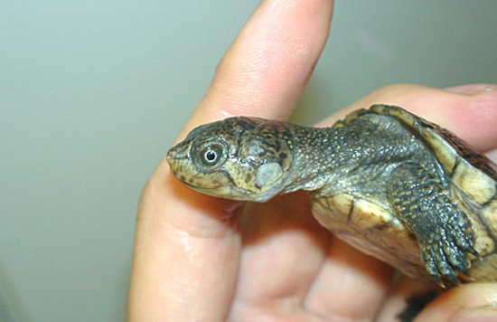
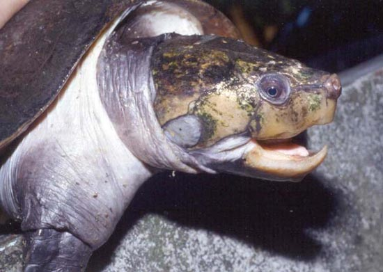
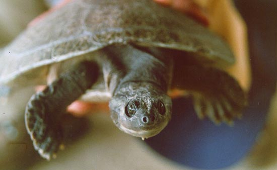

|
FAMILIA
PODOCNEMIDAE
Descripción, distribución y hábitos
Jonathan González, 2006
La familia Podocnemidae está compuesta por 3 géneros: Erymnochelys
(Grandidier, 1867), Podocnemis (Wagler, 1830), y Peltocephalus (Dumeril
and Bibron, 1835).
Todas son habitantes de Sudamérica y Centroamérica, excepto
Erymnochelys madagascarensis que habita en Madagascar. Todas ellas son
animales protegidos por el Convenio de Washington CITES, y son pocos
los aficionados que las mantienen, debido al escaso comercio de estas
especies y a su gran tamaño.
Erymnochelys madagascarensis
(Grandidier, 1867).
Características
El caparazón llega a alcanzar los 50 cm.
de longitud, pero normalmente no suele rebasar los 40 cm. El espaldar
es de color marrón oscuro, y presenta unas líneas concéntricas que
nacen en el centro de cada escudo. En los ejemplares jóvenes existe
una quilla longitudinal que desaparece con la edad. El borde posterior
no es aserrado.
El plastrón es de color amarillo claro y
el escudo intergular muestra una forma triangular y es de reducido
tamaño. En cada escudo plastral existe una mancha oscura que
desaparece a medida que el animal crece.
La cabeza es grande y robusta. La parte
superior de ésta es de color marrón oscuro mientras que en la zona
inferior de la mandíbula muestra un color anaranjado.
Las extremidades son de color marrón
oscuro y los dedos están dotados de membranas interdigitales bastante
anchas y de unas uñas afiladas.
Distribución
Habita en la zona oeste de la isla de
Madagascar, desde Mahajanga por el norte hasta Morondava en la zona
sur y Tsiroanomandidy en el este.
Hábitos
Es una habitante de lagunas de corriente
lenta y zonas de abundante vegetación.
La época de puesta es entre los meses de
octubre y noviembre y realizan un total de 3 puestas que pueden llegar
a alcanzar los 60 huevos.
Al contrario que sucede con las
Pelomedusa subrufa malgaches, E. madagascarensis vive en
aguas permanentes, no sometidas a sequía en las épocas secas.
Conservación
Actualmente está protegida por el
Apéndice II del Convenio de Washington, y en sus lugares de
procedencia se ve amenazada por la captura con fines alimenticios.
Sinónimos
Dumerilia madagascarensis,
Podocnemis madagascarensis.
Bibliografía
KUCHLING, G., (1988):
Population, structure, Reproductive Potencial & Increasing
Exploitation of the freshwater turtle Erymnochelys madagascarensis.-
Biological Conservation 43: 107-113.
KUCHLING, G., (1989):
Erymnochelys madagascariensis- A relict doomed to extintion by
competition with modern turtles? Abstracts of the world congress of
Herpetology, Canterbury.
KUCHLING, G., (1992):
Distribution & Status of Erymnochelys madagascariensis (GRANDIDIER,
1867)-unpublished report, 34pp.
KUCHLING, G., (1993):
Biologie und Lebensraum von Erymnochelys madagascariensis (GRANDIDIER,
1867) und Verleich mit den anderen Wasserschildkroten Madagaskars.-
Salamandra 28 (3/4): 231-250.
SIEBENROCK, F.,
(1906): Schildkröten von Ostafrika und Madagascar. In: Voletzkow,
1906-1910. "Reise in Ostafrika in den Jahren 1903-1905"; 2: 1-40.
TRUTNAU, L. &
VANDRHAEGE, M.; (1978):Die Lage der Shildkröten auf Madagaskar.-
DATZ, 31 (2):67-70.

Neonato de Erymnochelys madagascarensis, (Takeshi
Ebinuma,
Endless
Zone).
Peltocephalus dumerilianus
(Dumeril & Bibron, 1835).
Características
El caparazón que es bastante abombado,
llega a alcanzar la longitud de 50 cm. de longitud, y presenta una
quilla longitudinal marcada. El espaldar es de color pardo oscuro y en
algunos ejemplares llega casi por completo a adoptar un color negro.
Los escudos nucales de la parte superior de la cabeza, están separados
por el escudo nucal intermedio. El borde posterior es ligeramente
dentado y en las placas marginales muestra unas pequeñas manchas de
color pajizo. El plastrón es de color marrón claro y presenta una
línea de color beige en todo el contorno del plastrón.
La cabeza es grande y muy robusta, y
está dotada de un fuerte pico córneo en forma de gancho. Ésta es de
color gris oscuro y muestra unas manchas de color gris claro en la
zona de las mejillas. Una de las características que la separan del
género Podocnemis es la ausencia de la hendidura de la zona
intermedia de las cuencas oculares.
Las extremidades son de color gris
oscuro y tienen unas uñas afiladas con membranas interdigitales
bastante desarrolladas.
Distribución
Habita desde el curso alto del río
Amazonas (Perú, Ecuador, Colombia, Brasil y Venezuela) hasta la cuenca
hidrográfica del río Amazonas en Santarém (Brasil). Habita también en
la cuenca alta del río Orinoco (Colombia y Venezuela) hasta los ríos
Arauca y Capanaparo. Habita también en Surinam, Guyana y Guayana
Francesa.
Hábitos
Habita en ríos de abundante caudal,
donde se alimenta a pesar de su gran pico córneo, a base de frutas y
vegetales.
La puesta tiene lugar como en todas las
Podocneminae en bancos de arena descubiertos por la bajada de caudal
de los ríos.
El número de huevos es variable y pueden
llegar a poner un número entre 10 y 25 huevos, de gran tamaño (6 cm.
de longitud, y 4 cm. de diámetro), la eclosión en estado salvaje se
produce al cabo de 90-100 días.
Conservación
Está protegida por el Apéndice II del
Convenio de Washington CITES.
Sinónimos
Peltocephalus tracaxa,
Podocnemis dumeriliana.
Bibliografía
MEDEM, F., (1983): La reproducción de la
tortuga "Cabezón" Peltocephalus tracaxa SPIX, 1824, (Testudines,
Pelomedusidae), en Colombia.- Lozania (Bogota), Nr.43: 1-12.

Detalle de la cabeza de Peltocephalus
dumerilianus (Arassari
Trek).
Podocnemis
erythrocephala (Spix, 1824).
Características
El caparazón es abombado, y presenta un
color negro. El borde posterior no es aserrado. El borde de los
escudos marginales es de color rojizo y empalidece a medida que el
animal crece. El espaldar llega a alcanzar los 25 cm. como talla
máxima y es la componente más pequeña de su género.
El plastrón es de color anaranjado y en
los ejemplares adultos muestra un círculo de color amarillo difuminado
en los escudos anales. El color anaranjado del plastrón empalidece a
medida que el animal crece hasta adoptar un color beige.
La cabeza es aplanada y presenta un par
de líneas de color rojo que nacen debajo de los orificios nasales
hasta alcanzar la parte posterior de los ojos donde se bifurca. Detrás
de los ojos se encuentran otras 2 manchas del mismo color intenso que
en muchos ejemplares están unidas a la altura de la cabeza. Entre las
fosas nasales discurre una hendidura que surca la cabeza hasta la
parte superior de las cuencas oculares. Las extremidades son de color
gris oscuro y están provistas de membranas interdigitales.
Distribución
Habita desde la cuenca hidrográfica del
río Inirida, hasta el sur de Venezuela (curso alto del Amazonas). En
la zona sur se encuentra en el sistema fluvial del río Caiquiare,
hacia el curso alto del río Negro (noroeste de Brasil). En el río
Amazonas y el río Solimes, alcanza la zona de Santarém (Brasil).
Hábitos
Vive en cuencas fluviales donde lleva
una vida totalmente acuática. No es amante del sol y si un animal de
esta especie está expuesta a pleno sol en un tiempo de un cuarto de
hora, puede tener serios problemas.
Durante los primeros años de vida lleva
una alimentación basándose en alimento de origen animal, mientras que
en estado adulto se alimento especialmente de alimentos vegetales. En
cautividad es bueno ofrecerle fruta variada, especialmente fresas y
frambuesas, diente de león, lechuga, etc., aunque es muy recomendable
ofrecerle de vez en cuando algo de corazón de ternera, moluscos, etc.
Es un animal sensible a las bajas de
temperaturas y hay que procurar que la temperatura del agua no baje de
los 24ºC. En cautividad es un animal muy tímido y difícil de
reproducir.
La puesta tiene lugar en libertad
durante los meses de agosto, septiembre y noviembre, siendo la época
de celo en los meses de junio y julio. Desovan de 5 a 15 huevos que
son depositados en islotes de arena formados en medio del cauce del
río, y seguidamente son recubiertos de vegetación.
Conservación
En la actualidad es una de las especies
más abundantes del género, ya que la recolección de huevos no afecta a
las puestas. Está incluida en el Apéndice II del CITES.
Sinónimos
Podocnemis cayennensis,
Emys erythrocephala.
Bibliografía
CORLNELISSEN, T.: (1973): Podocnemis
cayennensis.- DATZ, 26 (6):208-209.
MITTERMEIER, R. A. &
WILSON, R. A., (1975): Redescription of Podocnemis erythrocephala
(Spix, 1824), an Amazonian pelomedusid turtle. Papeis Avulsos de
Zoología, Sao Paulo, 28(8):147-162.
NEILL, W.T.,
(1965): Notes on the five Amazonian species of Podocnemis.-
Herpetologica, 21 (4):287-294.
Adultos de Podocnemis erytrocephala (Chris
Tabaka, WCT).
Podocnemis
expansa (Schweigger, 1812).
Características
Se trata sin duda de una de las tortugas
dulceacuícolas más grandes que existen, ya que llegan a alcanzar los
90 cm. de caparazón y hasta 40 Kg de peso. Éste es poco abombado, de
forma casi circular en su parte posterior. El color del espaldar es
muy variable en ejemplares de diferente edad. Los jóvenes muestran
colores amarillentos a grisáceos, mientras que los adultos son de un
color marrón oscuro hasta llegar al negro.
El plastrón es de color amarillo pajizo.
El escudo intergular es más estrecho en su zona delantera que la
longitud del escudo gular.
La cabeza muestra una línea longitudinal
de color negro que surca la cara desde las fosas nasales hasta el
cuello. El resto de la cabeza muestra unas manchas circulares de color
blanco amarillento. El escudo situado encima de la frente del animal
es ancho y muestra un dibujo semejante al de un antifaz. El cuello y
la parte inferior de la mandíbula son de color grisáceo y algunos
ejemplares muestran tonos azulados.
Las extremidades muy palmeadas, son del
mismo color que el cuello y en las anteriores muestran 5 uñas,
mientras que en las posteriores son 4.
Distribución
Se distribuye desde los fluentes del
curso alto del río Amazonas (Perú, Ecuador, Colombia, Venezuela y
Brasil), hasta la zona más oriental (Belém). En la zona norte habita
en el sistema fluvial del río Orinoco, el cual lo habita hasta su
desembocadura y en la isla de Trinidad. En la región boliviana habita
en el curso alto del río Madeira.
Hábitos
Es una tortuga habitante de grandes
cursos fluviales, y únicamente abandona el agua para desovar. El
comportamiento reproductivo de esta especie es muy similar al que
llevan a cabo las tortugas marinas. Éstas se reúnen en millares en los
islotes arenosos situados en mitad de los cursos fluviales, donde
excavan sus nidos. Los desplazamientos en busca de islotes pueden
llegar a superar los 150 Km. En los periodos de la puesta la hembra
orina sobre la arena para reblandecerla y así poder cavar el nido con
más facilidad. La puesta llega a alcanzar los 100 huevos, y en la zona
brasileña se lleva a cabo en septiembre y noviembre, mientras que en
la zona venezolana, la puesta se realiza en los meses de marzo y
abril.
La alimentación se basa de pequeños
organismos en su estado juvenil, mientras que los adultos tienen una
dieta básicamente vegetariana. En cautividad es una especie muy
difícil de mantener debido a su gran tamaño, pero si se tiene la
posibilidad de tenerla en un gran estanque climatizado, su
alimentación no es muy complicada, ya que acepta todo tipo de carnes,
frutas y verduras, tales como la lechuga, la escarola, la sandía,
tomate, pepino, corazón e hígado de ternera...
La temperatura del agua como en el resto
de sus congéneres no debe descender de los 25ºC y se ha de evitar
exponer esta tortuga a irradiaciones solares elevadas.
Conservación
Actualmente se encuentra amenazada,
aunque sus poblaciones se recuperan lentamente gracias a los planes de
reintroducción en el delta del Orinoco, y en zonas brasileñas. También
se han protegido los principales lugares de puesta en Brasil,
Venezuela, Perú y Colombia, por lo que poco a poco se está acabando
con la recolección masiva de los huevos y de los adultos para fabricar
aceite de tortuga.
Actualmente está incluida en el Apéndice
I del CITES.
Bibliografía
LÜLING, K. H.: (1963): Podocnemis
unifilis und Podocnemis expansa.- Aquarien und Terrarien,
10(6):195-200.
ALHO, C. J. R, DANNI, T. M. S & PADUA,
L. F. M: 1984: Influencia da temperatura de incubacao na determinacao
do sexo da tartaruga da amazonia Podocnemis expansa (Testudinata:
Pelomedusidae). Revista. Brasil. Biol. 44(3):305-311.

Ejemplar adulto de Podocnemis expansa (Maniac
Reptiles).
Podocnemis
lewyana (Dumeril, 1852).
Características
El espaldar es aplanado y de color gris
oscuro, aserrado en su borde posterior. El plastrón es de color
amarillo a grisáceo. La parte delantera del escudo intergular es tan
ancha como la longitud del escudo gular.
La cabeza es de color gris y carece de
manchas amarillas, pero está provista de una hendidura que va desde
las fosas nasales hasta la parte superior de los ojos. En la parte
posterior de los ojos existen unas pequeñas manchas difuminadas de
color gris. El cuello es de color gris claro y presenta 2 barbillones
en la parte inferior de la mandíbula.
Las extremidades son de color gris
oscuro y poseen unas grandes membranas interdigitales.
Distribución
Habita en las cuencas hidrográficas de
los ríos Nechi, San Jorge, Magdalena y Sinu, en el norte de Colombia.
Hábitos
Es la componente del género
Podocnemis que menos se conoce. Es de suponer que sus hábitos y
costumbres alimenticias y reproductivas no deben variar mucho de sus
congéneres. En la época de puesta, estas tortugas cavan nidos de hasta
65 cm. de profundidad. Los huevos son de cáscara dura y llegan a
eclosionar al cabo de 40 días.
Conservación
Está incluida en el Apéndice II del
CITES.
Bibliografía
WILLIAMS, E.
E., (1954): A key and description of the living species of the genus
Podocnemis (sensu BOULENGER), (Testudines; Pelomedusidae).-
Bull. Mus. comp. Zool. (Cambridge, Mass.)111(8):279-295.

Detalle de la cabeza de un ejemplar
adulto de Podocnemis lewyana (Claudia
Ceballos).
Podocnemis
sextuberculata (Cornalia, 1849).
Características
El espaldar es algo más abombado que en
sus congéneres. Éste es de color marrón oscuro y tiene una quilla
vertebral marcada, que forma una protuberancia en el 2º escudo
vertebral. Llega a alcanzar los 30 cm. de longitud. El borde posterior
no es aserrado pero muestra irregularidades entre los escudos.
El plastrón es de color amarillo
grisáceo, y es dentado en su parte posterior. El plastrón de esta
especie tiene una característica única en las tortugas: presenta 3
pares de protuberancias plastrales situadas en los escudos femorales,
ventrales y pectorales.
La cabeza es grande y de color marrón
oscura y en los ejemplares jóvenes presenta unas manchas difuminadas
de color blanco. En la parte inferior de la mandíbula existen 2
barbillones.
Las extremidades son de color grisáceo y
en la mitad inferior pueden adoptar un color marfil. Las anteriores
poseen 5 uñas, mientras que las posteriores 4. Todas ellas provistas
de unas enormes membranas interdigitales.
Distribución
Habita en las cuencas hidrográficas del
amazonas, Putumayo y Caqueta.
Hábitos
Es una tortuga muy
acuática y al igual que en P. expansa se congrega en grandes
números para realizar la puesta, que comprende desde 8 a 13 huevos. En
la región del Amazonas la puesta tiene lugar en el mes de julio,
mientras que en Putumayo se realiza en octubre y noviembre, siendo en
octubre cuando se realizan las puestas en Caqueta (PRITCHARD, 1969)
Se alimenta a base
de peces, moluscos y demás organismos acuáticos.
Sus necesidades de
temperatura son idénticas a las demás especies del género.
Conservación
Está incluida en el Apéndice II del
CITES
Bibliografía
VANZOLINI, P. E. & GOMES, N., (1979):
Biometry and reproduction of Podocnemis sextuberculata.-
Pap. Avulsos. Zoo. (Sao Paulo), 32(23):277-290.

Ejemplar de Podocnemis sextuberculata (Turtle
Tracker).
Podocnemis
unifilis
(Troschel, 1848).
Características
El caparazón llega a alcanzar los 45 cm.
de longitud, y es muy similar al de P. erythrocephala, y de
hecho solo difiere de éste en el color del borde de los escudos
marginales. Mientras que en P. erythrocephala es anaranjado, en
P. unifilis es de color amarillo. A medida que el animal crece
el color amarillo desaparece y el caparazón se torna de color negro.
El plastrón es de color gris y carece de
manchas y dibujos.
La cabeza tiene forma triangular y es de
color negro. Ésta está moteada por unas manchas de color amarillo. En
los ejemplares adultos este color amarillo es prácticamente
inapreciable.
El cuello y las extremidades son de
color gris oscuro y contienen unas membranas interdigitales muy
desarrolladas.
Distribución
Habita desde los afluentes del curso
alto del Amazonas, en Perú, Ecuador, Venezuela, Colombia y Brasil en
la zona oeste, hasta la desembocadura del río Amazonas.
El límite norte de la distribución se
encuentra en la cuenca del río Orinoco a su paso por Venezuela, y los
cursos fluviales de Guyana, Surinam y Guayana Francesa. En la zona más
meridional está distribuida en los ríos Araguaia (Brasil) y Yacuma
(Bolivia).
Hábitos
Es de hábitos acuáticos aunque es sin
duda una de las especies de su género que más disfruta asoleándose.
Como en el resto de especies de este
género, su alimentación en estado juvenil se basa en alimento de
origen animal. En cautividad come con voracidad corazón de ternera,
pulgas de agua, larvas de mosquito, zophobas, etc. En estado adulto
esta tortuga es eminentemente vegetariana y muestra gran predilección
por el pimiento rojo, el tomate y la lechuga.
La temperatura óptima debe estar en
torno a los 26ºC.
Debido a su gran tamaño, su reproducción
en cautividad es muy difícil, pero en instalaciones grandes es una
tortuga muy fácil de mantener, y en muchas ocasiones se ha logrado ya
su reproducción.
La madurez sexual la alcanzan a una edad
de 8 a 12 años, cuando el caparazón mide 28 cm. (HIGHFIELD, 1992)
La puesta consta de 10 a 40 huevos,
siendo 25 la media en cada puesta. Estos miden 40 X 25mm y a una
temperatura de 28ºC eclosionan al cabo de aproximadamente 70 días.
En la época de la puesta son capaces de
recorren enormes distancias en busca de ríos de poco cauce y que dejen
descubiertas islotes de arena donde desovar.
Dependiendo de la localidad, la época de
puesta puede variar. En la zona del Amazonas la puesta tiene lugar en
los meses de julio, agosto y septiembre. En los Llanos Orientales y en
el río Guayabero-Guaviare las puestas se realizan desde diciembre
hasta mediados de febrero. En Putumayo desde noviembre a enero. En las
zonas sureñas de Caqueta las puestas son en octubre, mientras que en
el norte de Caqueta se realizan en noviembre y Diciembre (PRITCHARD,
1969)
Los recién nacidos miden de 35 a 40 mm.
con un peso medio de 10 gramos.
Conservación
En su área de distribución, es una
tortuga ya escasa en la parte norte, pero que sin embargo, se
reproduce con normalidad en las zonas más meridionales.
Actualmente millones de huevos son
recolectados por los nativos, que hacen caso omiso de las leyes
proteccionistas. Actualmente está protegida por el Apéndice II del
CITES.
Bibliografía
ALEVEN, I. M.; (1976):
Podocnemis unifilis.- Het
Aquarium, 46(11):287.
BELKIN, D. A. & GANS,
C., (1968): An unusual turtle feeding niche. Ecology (49):768-769.
MEDEM, F.;
(1964): Morphologie, Ökologie und Verbreitung der Schildkröte (Podocnemis
unifilis) in Kolumbien.-
Senckenbergiana biol., 45:353-368.
Ejemplares juveniles de
Podocnemis unifilis.

Ejemplar de
Podocnemis unifilis mantenido en cautividad (Marcelo López).
Podocnemis
vogli
(Müller, 1935).
Características
El espaldar es algo abombado y varía
desde un color marrón claro a colores oscuros cercanos al negro,
mientras otros ejemplares muestran un color amarillento a tonos ocres.
Éste puede llegar a medir 30 cm. siendo de 36 cm. el record (PRITCHARD,
1969). El borde posterior del caparazón es liso.
El plastrón es de color amarillo claro
con manchas de color oscuro situadas en los bordes de los escudos
plastrales. La cabeza es de color marrón tierra, y en los ejemplares
jóvenes muestra una serie de manchas amarillentas a lo largo de la
cabeza, pero sin llegar a la coloración de su congénere P. unifilis.
Las extremidades son de color marrón
claro con tonos amarillentos, y muestran unas membranas interdigitales
bastante desarrolladas.
Distribución
Habita en los afluentes del río Apure
(Venezuela), río Guaviare, zona alta del río Mera (Colombia) y cuenca
del río Orinoco hasta alcanzar la Reserva de Guri (Venezuela)
Hábitos
Es una tortuga que prefiere la vida en
pantanos y cursos de agua lentos. Al igual que en P. expansa,
en las épocas de inundaciones buscan otras zonas donde residir. Según
mi opinión esto es fundamental ya que en la estación seca muchas
tortugas se agrupan en una misma charca, y si los ejemplares de éstas
no se renuevan puede haber problemas de consanguinidad.
Su alimentación está basada
fundamentalmente en alimento de origen vegetal, aunque también consume
en ocasiones algo de alimento de origen animal, como pescado,
insectos, carroña, etc.
La puesta consta de 5 a 17 huevos, y
miden entre 4 y 5mm de longitud y entre 2 y 3 mm. de anchura,
alcanzando un peso de entre 10 y 20 gramos.
Las tortugas desovan desde finales de
octubre a primeros de enero, y llegan a depositar 2 puestas, que
eclosionan durante los meses de abril y mayo.
Conservación
Es una tortuga bastante abundante, por
el hecho de que no se ve sometida a captura con fines comerciales.
Está protegida por el Apéndice II del Convenio de Washington.
Subespecies
(PRITCHARD & TREBBAU, 1984) sugiere que
podría tratarse de subespecies diferentes las poblaciones venezolanas
con las colombianas, diferenciándose las colombianas por un menor
tamaño que las procedentes de Venezuela.
Bibliografía
ALARCÓN, H., (1969): Contribución al
conocimiento de la morfología, ecología, comportamiento y distribución
geográfica de Podocnemis vogli. Testudinata (Pelomedusidae).
Acad. Colomb. Cienc. Exact. Fis. nat. 13:303-326.
MERCHAN, M., FIDALGO, A. M. & PEREZ, C.,
(1999): Biología y distribución del galápago llanero en Venezuela.
Podocnemis vogli. Reptilia(E)18: 29-31.
MONDOLFI, E., (1955): Anotaciones sobre
la biología de tres quelonios de los llanos de Venezuela. Mem. Soc.
Cienc. Nat. La Salle. 15: 177-183.
RAMO, C., (1980): Biología del galápago
(Podocnemis vogli Müller, 1935) EN el Hato El Frío, llanos de
Apure (Venezuela). Tesis doctoral. Universidad de Navarra (España).
267p.
RHODIN, A. G. J., MEDEM, F. &
MITTERMEIER, R. A., 1981: The ocurrence of neutosphagia among
podocnemine turtles. Brit. J.
Herpetol., 6:175-176.a


Ejemplares de
Podocnemis vogli
en Venezuela (Manuel Merchán).
LINKS
http://www.pronaturaleza.org/tortugas_prog.htm
http://www.manausenergia.com.br/arquivos/Cppqa.pdf
Agradezco
enormemente la colaboración de Marcelo López y Manuel Merchán, por las
imágenes de P. unifilis y P. vogli utilizadas en el presente artículo
y a
Endless
Zone, Arassari
Trek, WCT,
Maniac
Reptiles,
Claudia
Ceballos,
Turtle
Tracker, Marta Avanzi (AAE),
por permitirme usar imágenes de sus respectivas páginas web.
|